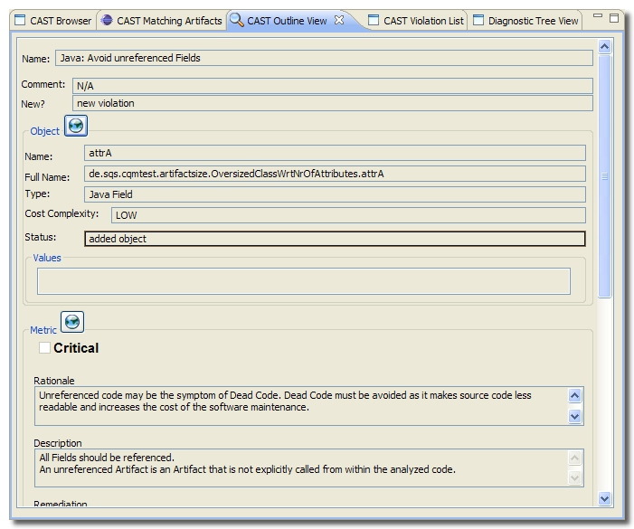

The CAST Outline View displays information about a violation selected in the CAST Violation List. This includes the violation name, details about the object that has violated the Quality Rule, and details about the corresponding CAST Quality Rule.

There are two identical buttons available in the CAST Outline View:
 . Clicking
either of these will display detailed information in the
CAST Browser about the corresponding object or metric - this invokes a
connection to the CAST Dashboard as defined in
Preferences.
. Clicking
either of these will display detailed information in the
CAST Browser about the corresponding object or metric - this invokes a
connection to the CAST Dashboard as defined in
Preferences.